<title>Viewer side-by-sides 2</title>
<meta name="claude:viewport-fit-sides" content="cover">
<style>
@import url("https://fonts.googleapis.com/css2?family=Inter:wght@400;600;700&display=swap");
:root {
  --bg: #f6f5f1; --card: #ffffff; --text: #1d2129; --muted: #5d6470; --line: #dcd9d0; --accent: #2f6fb0;
  --good: #1e7a46; --tag: #e7e5de; --tagnew: #d6e8f7; --shot: #0c1018;
  --font: "Inter", system-ui, -apple-system, "Segoe UI", sans-serif;
}
@media (prefers-color-scheme: dark) {
  :root:not([data-theme="light"]) {
    --bg: #0f1218; --card: #171b23; --text: #e4e7ec; --muted: #9aa3b0; --line: #2b313c; --accent: #7fb5ea;
    --good: #6fd39a; --tag: #262c36; --tagnew: #1d3550; --shot: #0c1018;
  }
}
:root[data-theme="dark"] {
  --bg: #0f1218; --card: #171b23; --text: #e4e7ec; --muted: #9aa3b0; --line: #2b313c; --accent: #7fb5ea;
  --good: #6fd39a; --tag: #262c36; --tagnew: #1d3550; --shot: #0c1018;
}
* { box-sizing: border-box; }
html, body { margin: 0; overflow-x: hidden; }
body { background: var(--bg); color: var(--text); font: 15px/1.55 var(--font); }
main { max-width: 1300px; margin: 0 auto; padding: 28px max(16px, env(safe-area-inset-right, 0px)) 64px max(16px, env(safe-area-inset-left, 0px)); }
h1 { font-size: 26px; margin: 0 0 6px; }
h2 { font-size: 20px; margin: 44px 0 6px; padding-top: 16px; border-top: 1px solid var(--line); }
h3 { font-size: 16px; margin: 24px 0 8px; }
p, li { max-width: 80ch; }
.muted { color: var(--muted); }
code { font: 13px ui-monospace, Menlo, monospace; background: var(--tag); padding: 1px 5px; border-radius: 4px; overflow-wrap: anywhere; }
.rec { background: var(--card); border: 1px solid var(--line); border-left: 4px solid var(--good); border-radius: 8px; padding: 12px 16px; margin: 14px 0; max-width: 90ch; }
.rec b:first-child { color: var(--good); }
.done { background: var(--card); border: 1px solid var(--line); border-left: 4px solid var(--accent); border-radius: 8px; padding: 10px 16px; margin: 12px 0; max-width: 90ch; }
.opts { display: grid; grid-template-columns: repeat(auto-fit, minmax(min(100%, 260px), 1fr)); gap: 14px; margin: 12px 0; }
.opt { background: var(--card); border: 1px solid var(--line); border-radius: 8px; padding: 10px; min-width: 0; }
.opt h4 { margin: 0 0 4px; font-size: 15px; }
.opt p { margin: 0 0 8px; font-size: 13.5px; color: var(--muted); }
.panels .opt img { max-width: 300px; margin: 0 auto; }
img { display: block; width: 100%; height: auto; border-radius: 6px; background: var(--shot); }
.stack { display: grid; gap: 14px; margin: 12px 0; }
.stack .opt h4 { margin-bottom: 6px; }
</style>
<main>
<h1>Viewer side-by-sides 2</h1>
<p class="muted">Lane 56, 2026-10-30. One look for you to choose (the layer picker), and two changes that are already in, shown before
and after so you can see what moved. Pictures are of the peoples run 3097e3 (on world 2a7385), world 2a7385 itself, the main run
6b48f5 and its time zoom f778ab.</p>

<h2>A. The "Colour by" picker (PW-1026): your choice</h2>
<p>"Colour by" is the control you use most. Today it is one block of buttons: 51 on this peoples run (31 of them "crop: &#8230;") and 73 on
this world, so the Overlays and Display sections are pushed below the bottom of the screen. The new picker puts the same layers in
folding sections (Land and rock, Climate and air, Water and sea, Plants and soils, Game and use, Peoples), with a search box at the top,
a row of the last four layers you used, and one dropdown each for crops, animals and body traits. Every layer is still there, and old
links (<code>?layer=&#8230;</code>) still work. The viewer remembers which sections you leave open.</p>
<p>Try it: add <code>&amp;picker=grouped</code> to any globe address.</p>

<h3>On the peoples run</h3>
<div class="opts panels">
  <div class="opt"><h4>1. Current: one block of buttons</h4><p>51 buttons. The peoples layers sit at the top, then 5 animals and 31 crops; the list runs past the bottom of the window.</p>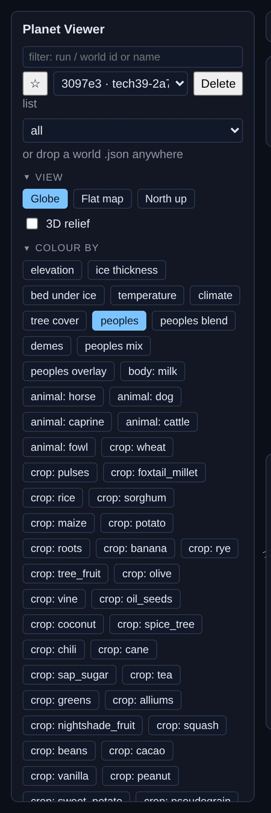</div>
  <div class="opt"><h4>2. Grouped, with search</h4><p>Sections fold. The section with the layer you are on opens by itself; crops, animals and body traits are one dropdown each.</p>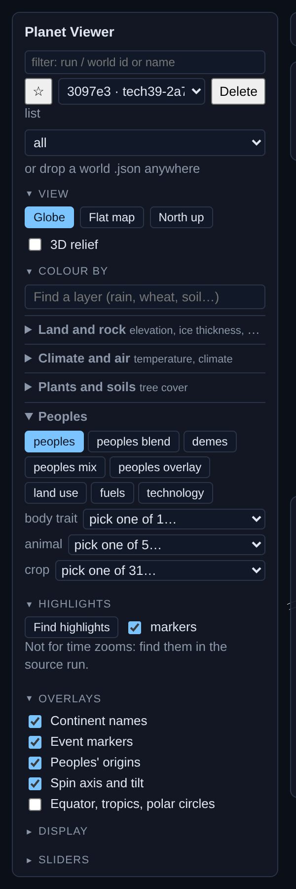</div>
</div>
<h3>On a finished world</h3>
<div class="opts panels">
  <div class="opt"><h4>1. Current</h4><p>73 buttons, in the order they were added to the code.</p>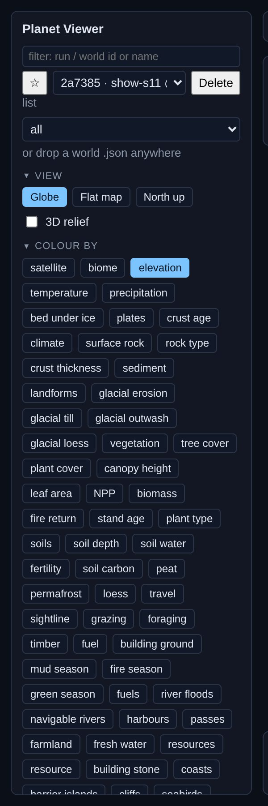</div>
  <div class="opt"><h4>2. Grouped</h4><p>Closed sections say how many layers they hold and name the first few. Overlays and Display are back on screen.</p>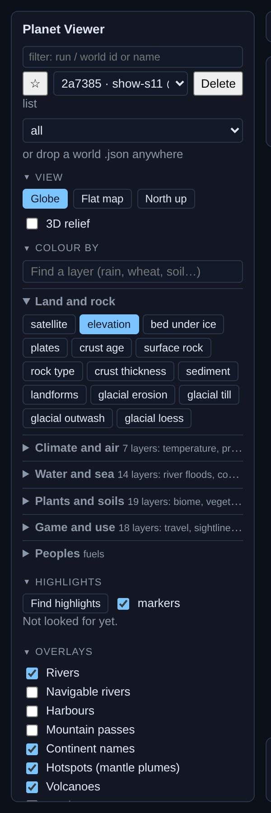</div>
</div>
<h3>The grouped picker in use</h3>
<div class="opts panels">
  <div class="opt"><h4>Typing "wheat"</h4><p>The search also reads each layer's description. Enter picks the first match; Esc clears the box.</p>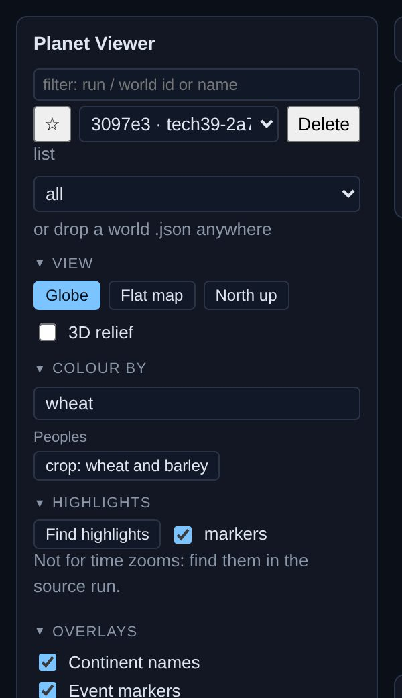</div>
  <div class="opt"><h4>Typing "rain"</h4><p>Matches come up under their section's name.</p>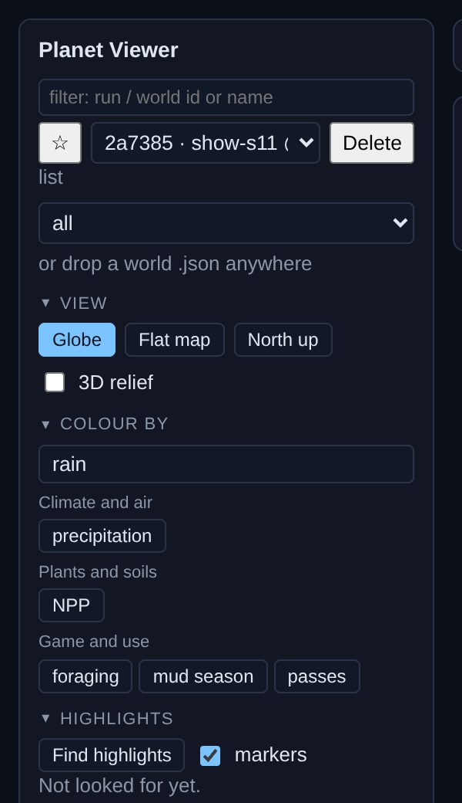</div>
  <div class="opt"><h4>After a few picks</h4><p>The "recent" row keeps the last four layers you used, crops included.</p>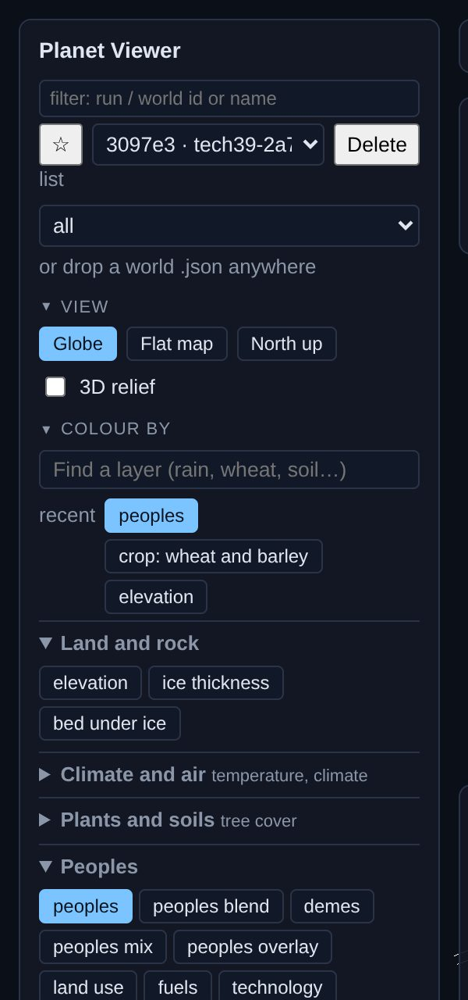</div>
</div>
<div class="rec"><b>Recommendation: make the grouped picker the default.</b> It shows everything the flat block does, finds a layer in two or
three keystrokes, and gives the side panel back its lower half. You lose one click for a layer in a closed section, and the recent row
mostly gets that back. If you pick it, the next steps are to give the regional zoom page the same sections and names, and to drop the
flat block.</div>

<h2>B. The time slider has dates (PW-1042): already in</h2>
<div class="done">This was a fix rather than a change of look, so it is the default now. On a peoples run the slider is a log scale of
time before the present, so the last 10,000 years get a fair share of the bar, with the three eras it was built from as bands, as on the
workbench timeline. Main runs and ice-age time zooms keep an even scale, with round dates under it. The arrow keys still step one stored
moment at a time.</div>
<div class="stack">
  <div class="opt"><h4>Peoples run, before</h4></div>
  <div class="opt"><h4>Peoples run, after</h4>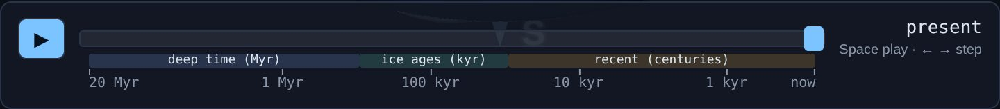</div>
  <div class="opt"><h4>Main run, before and after</h4></div>
  <div class="opt"><h4>Ice-age time zoom, before and after</h4>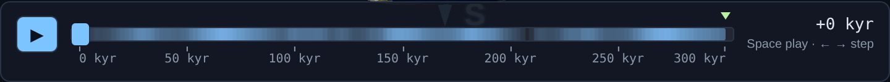</div>
</div>

<h2>C. The peoples workbench header (PW-1047): already in</h2>
<div class="done">The header now has two labelled groups, Tree and Run, instead of one ragged row. Download and open-a-file sit in an
Import / Export menu. The help text that used to fill a footer under every tab now opens from the "?" at the right of the tabs. The
picture shows the help and the menu both open.</div>
<div class="opts">
  <div class="opt"><h4>Before</h4>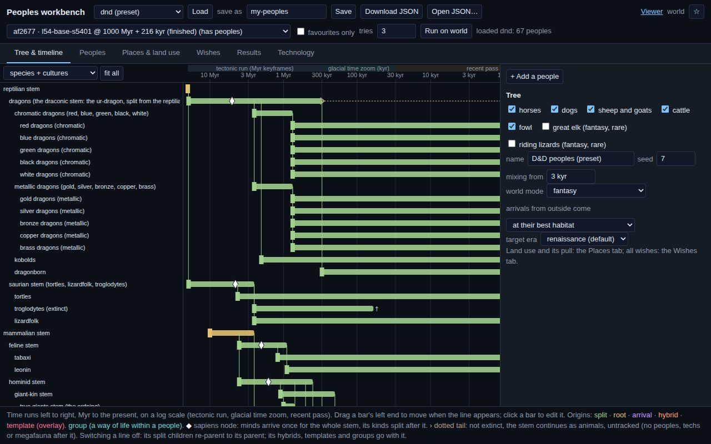</div>
  <div class="opt"><h4>After</h4>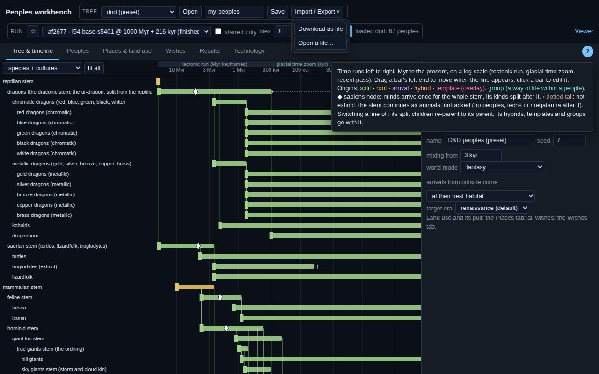</div>
</div>

<h2>Still waiting from the last page</h2>
<p>Three earlier choices are still open and unchanged: the peoples' colours (<code>?palette=family</code>), the rebuilt colour ramps
(<code>?ramps=new</code>) and the docked legend (<code>?legend=dock</code>). See
<a href="../viewer-ux-sides/index.html">the first side-by-sides page</a>.</p>
</main>
